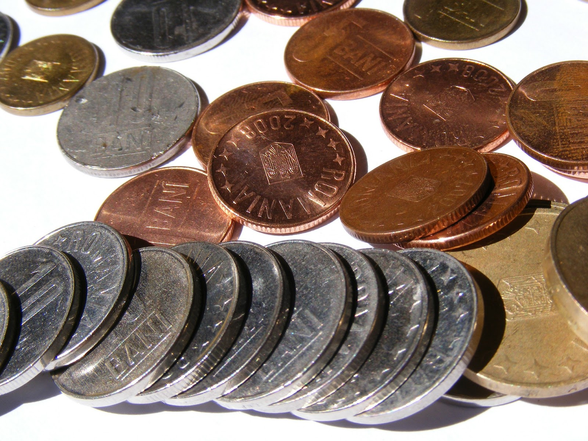
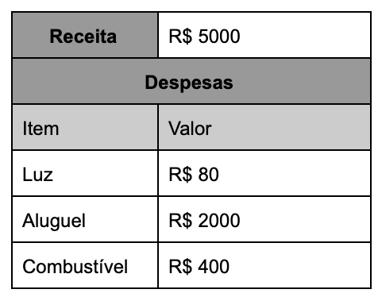
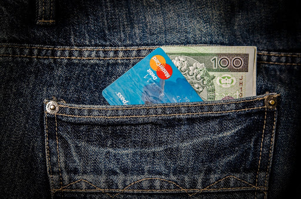

A importância da educação financeira para o brasileiro - Você precisa aprender agora!
Descubra como melhorar a sua saúde financeira em poucos passos
A educação financeira, é cada dia mais necessária para uma vida equilibrada e sem sustos. Sabemos que em tempos de crise, a questão monetária pesa mais no orçamento e cultivar bons hábitos na saúde financeira pode ser a grande saída para enfrentar a crise.
A verdade é que, por mais que você ganhe bem, isso não quer dizer que você tem um equilíbrio na sua conta e há quem, mesmo assim, chegue a tão temida conta no vermelho. Sem educar seus hábitos e até mesmo, mentalidade, dificilmente você conseguirá ter paz financeira.
Somente com estes bons hábitos você terá mais tranquilidade para tomar decisões importantes e ter condições de enfrentar imprevistos.
Mas afinal, o que é Educação Financeira?
Segundo a OCDE (Organização para Cooperação e Desenvolvimento Econômico) de 2005, educação financeira é:
“o processo mediante o qual os indivíduos e as sociedades melhoram a sua compreensão em relação aos conceitos e produtos financeiros, de maneira que, com informação, formação e orientação, possam desenvolver os valores e as competências necessários para se tornarem mais conscientes das oportunidades e riscos neles envolvidos e, então, poderem fazer escolhas bem informadas, saber onde procurar ajuda e adotar outras ações que melhorem o seu bem-estar. Assim, podem contribuir de modo mais consistente para a formação de indivíduos e sociedades responsáveis, comprometidos com o futuro".
Por isso, vamos tratar neste artigo, as principais dicas e informações para iniciar o seu processo de educação financeira.
Você sabe a diferença de receita e despesa?
Receita
Receita é tudo que chega azulzinho na sua conta. Tudo que você recebe pelo seu trabalho, mas, cuidado, não coloque como receita o seu salário bruto! Você precisa lembrar que só recebe o salário após todos os descontos (como impostos e benefícios), seja você CLT (quando a empresa se encarrega de descontar), seja como PJ (quando você mesmo desconta).
Despesa
Despesa é tudo que sai da sua conta. Lembre de todos os gastos fixos (como luz, água, internet) mas não esquece aqueles que acontecem de vez em quando como um cineminha, churrasquinho, balada.
Como organizar minha receita e minhas despesas?
Agora que você já sabe a diferença entre despesa e receita (fixa ou não), já pode começar a sua organização financeira. Para ter uma educação financeira não basta ter uma ideia de quanto ganha e de quanto está gastando no mês.
Crie o hábito de manter um levantamento das suas despesas. Qual o seu gasto total no mês? Separe por despesas fixas e ocasionais. Saiba para onde está indo seu dinheiro! Guarde as notas fiscais e comprovantes de pagamentos feitos, para não se esquecer de nada.Você precisa colocar tudo no papel, ou melhor, numa planilha!
Coloque tudo em uma planilha ou app de controle de orçamento!
Agora que você sabe a sua Receita e sabe as suas Despesas, você já consegue começar a se organizar melhor. Lance o valor da sua receita ou receitas e lance todas as suas despesas com sua descrição respectiva.
Por exemplo:
Quando chega no final do mês, qual o resultado final? A receita foi maior que as despesas? Se foi, parabéns, já é um grande passo!
Agora, se você está gastando mais que sua receita...está na hora de repensar sua organização financeira. Faça uma faxina financeira na sua planilha! Está na hora de você olhar todas as suas despesas e analisar tudo o que pode ser cortado.
Além da opção de planilha, existem vários app que ajudam a manter a gente na linha com o orçamento e saber tudo que está ganhando e gastando. Um dos mais usados é o GuiaBolso, que está entre os 10 apps financeiros mais baixados.
Análise:
- Onde estou gastando demais?
- Onde posso reduzir os gastos?
- Posso sair para jantar fora duas vezes por mês, em vez de todos os fins de semana?
- Eu tenho tempo de ver televisão? Assisto só a cinco canais da TV por assinatura, enquanto tenho mais de cem disponíveis?
- Gasto demais com presentes para os outros? Meus filhos podem ir a menos festas de coleguinhas por mês?
- Estou comprando em promoções, sem nem precisar do produto, só porque está mais barato?
- Estou gastando muita energia elétrica na minha casa?
- Estou gastando demais com telefone? Posso trocar o plano por um mais adequado às minhas necessidades? Posso encontrar os amigos pessoalmente mais vezes em vez de bater papo por celular?
Aprender a comprar também economiza! Nem tudo são cortes!
Melhorar as finanças não é só fazer cortes na sua planilha de orçamentos, você precisa aprender também a comprar. Adote um hábito simples e sempre se pergunte: - Eu preciso disso? - Eu preciso disso agora? - Posso esperar e comprar à vista? Você sabia que a cultura de dividir no cartão não existe em vários países? E como que eles fazem??? Simples, economizam! Pense bem, se você não tem urgência em comprar um celular novo, porque você não determina “parcelas” de economia por mês?
Faça as suas parcelas
Digamos que você quer um celular novo de R$ 1000 - simples, escolha em quanto tempo você vai “dividir” para você mesmo, por exemplo, em 10 vezes. Junte durante 10 meses o valor de R$ 100 e pague à vista!
Pague com desconto
Lembre sempre de chorar um desconto, afinal, você está pagando à vista! Não é motivo nenhum de vergonha pedir desconto. As lojas já têm uma margem de negociação e não vão vender com prejuízo. Se for pagar à vista, sempre negocie. Em alguns casos você pode economizar quase 10% do valor final.
Não faça supermercado com fome!
Parece besteira, mas não é! Pesquisas apontam que quando a gente vai ao mercado antes do almoço, a gente gasta mais! A fome faz você comprar mais do que precisa para aquele período.
Faça lista de mercado
Siga sempre o plano da sua listinha de mercado. Se você não colocou na lista é porque você não precisa realmente daquilo naquele momento. Evite comprar sem necessidade, uma pesquisa mostra que a maioria dos brasileiros compra por impulso.
Com essas dicas você certamente vai melhorar os seus gastos com compras mais conscientes e um hábito mais saudável de compra.
Faça essa organização e pague suas dívidas
Uma das principais dicas, para organização financeira é: resolva todas as suas pendências. Negocie suas dívidas e depois faça um planejamento para o futuro, de acordo com sua receita e capacidade de poupar. Sempre revisite seus gastos e analise suas compras, segundo as dicas que demos nesse artigo.